All you need is a sheet of paper and a flat surface to fold on. Foldable paper crafts are some of the most satisfying activities you can do with kids because the results are instant, the cleanup is almost nothing, and every finished piece feels like a little magic trick. We put together 20 of our favorite ideas, from super simple accordion fans to charming origami animals, so you can pick the ones that feel right for your child's age and interest.
Whether this is your first time folding paper together or you have tried a few projects already, this list has something for every skill level. The beginner ideas are genuinely easy, and even the slightly more involved ones come together quickly once you walk through the steps together.
What You'll Need
Most foldable paper crafts need very little. Grab these basics and you will be set for nearly every project on the list.
- Origami paper, double-sided, pre-cut into squares and easy to fold cleanly.
- Construction paper or cardstock, great for larger folds, fans, and crowns.
- Fiskars kid-safe scissors, for trimming and cutting shapes before folding.
- Elmer's glue sticks, for securing folded edges and decorating finished pieces.
- A ruler, for guiding straight folds on thicker paper.
- Markers or crayons, for adding faces, details, or color after folding.
20 Foldable Paper Craft Ideas
1. Classic Origami Boat
The paper boat is one of those foldable paper crafts that kids ask to do again and again. Start with a rectangular sheet, fold it in half lengthwise, then follow the classic boat-folding steps to create a sturdy little vessel. Use blue origami paper for a fun nautical look, and let your child draw porthole windows on the sides with a marker.
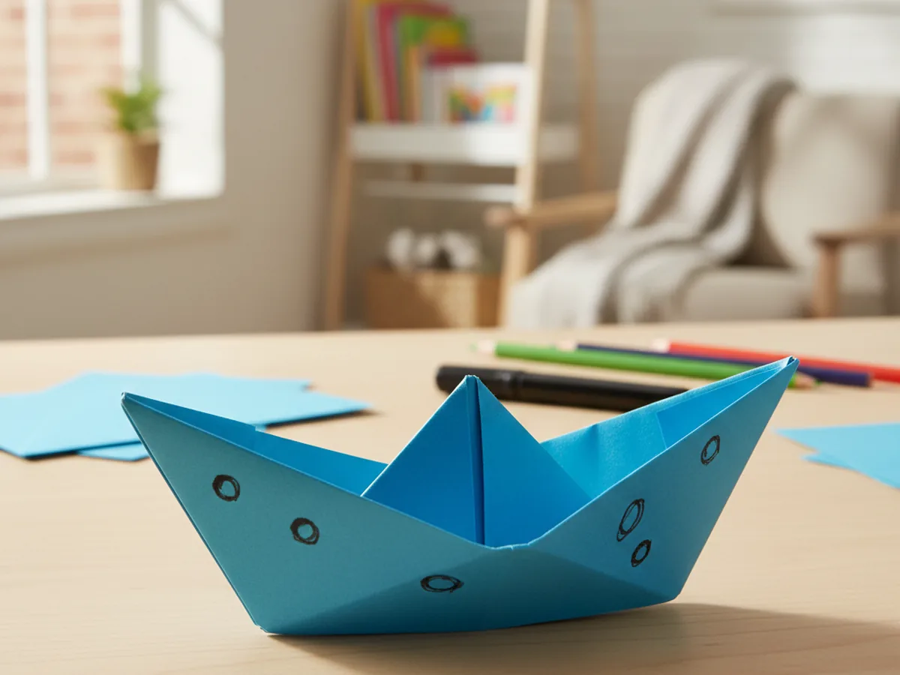
2. Paper Fortune Teller
Also known as a cootie catcher, the paper fortune teller is a playground classic that never gets old. Fold a square sheet into the pinching shape, write colors and numbers on the outside flaps, and hide silly fortunes inside. Kids 6 and up love making these as gifts for friends, and younger ones are happy to just play with the folded shape.
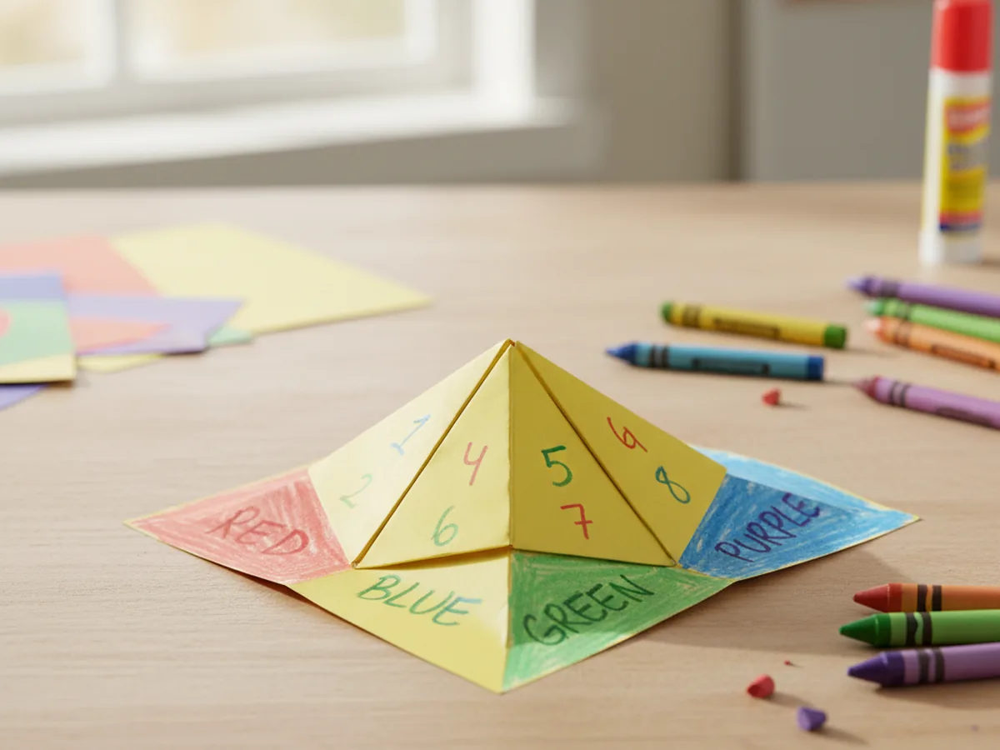
3. Accordion-Fold Fan
This is one of the easiest foldable paper crafts for toddlers and preschoolers. Fold a sheet of paper back and forth in even pleats like a fan, then pinch one end and secure it with a piece of tape or a rubber band. Decorate the paper with markers before folding for an extra cheerful result. They love waving these around on warm days.
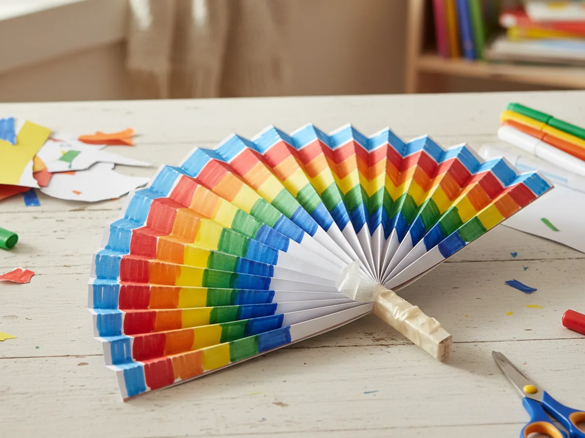
4. Paper Jumping Frog
Fold a small rectangle of green cardstock into the classic jumping frog shape, pressing down on its back end to make it leap forward. This project takes a few tries to get right, but once it clicks, your child will be launching paper frogs across the kitchen table for the rest of the afternoon. It is one of those foldable paper crafts that doubles as a toy when finished.
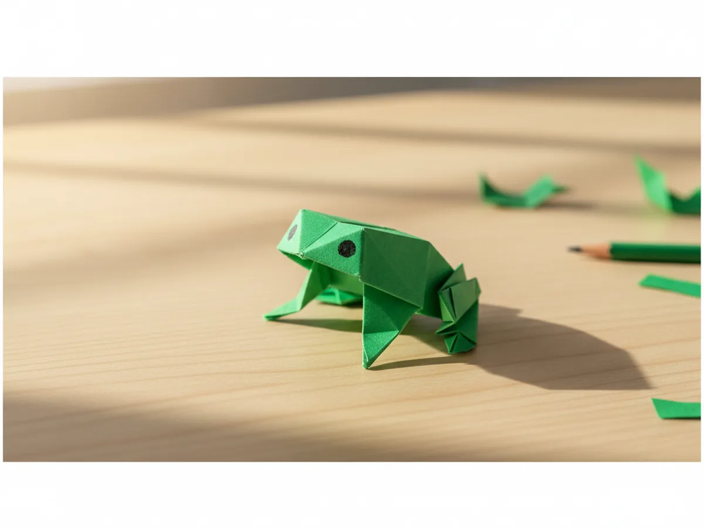
5. Folded Paper Butterfly
Accordion-fold a rectangular strip of paper, pinch it in the center, and fan out both halves to create a pretty butterfly shape. Twist a small pipe cleaner around the center pinch for antennae, or use a strip of paper instead. Let your child color the paper with marker patterns before folding so the wings show off their artwork. 🦋
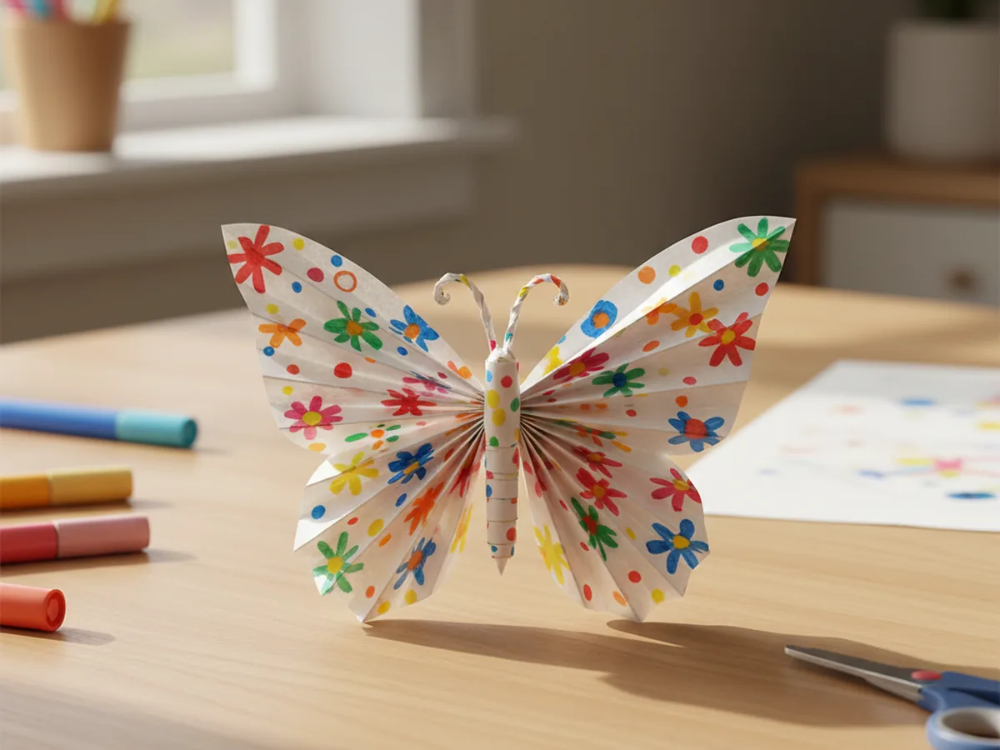
6. Origami Drinking Cup
This is a wonderful little project that actually works as a real cup. Fold a square of paper into the classic cup shape and your child can fill it with water for a quick sip. It is one of those foldable paper crafts that feels genuinely impressive when kids realize their paper creation holds liquid. Use thicker origami paper for best results.
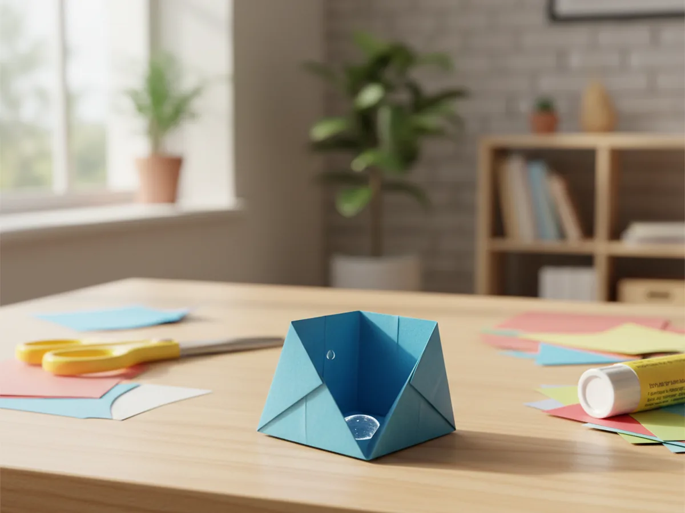
7. Origami Tulip
Fold a red or pink square into the simple tulip blossom shape, then attach it to a green paper strip stem. A handful of these arranged in a small vase makes a sweet gift for grandparents or teachers. The folding is gentle enough for ages 5 and up with a little guidance, and the finished flowers look genuinely charming.
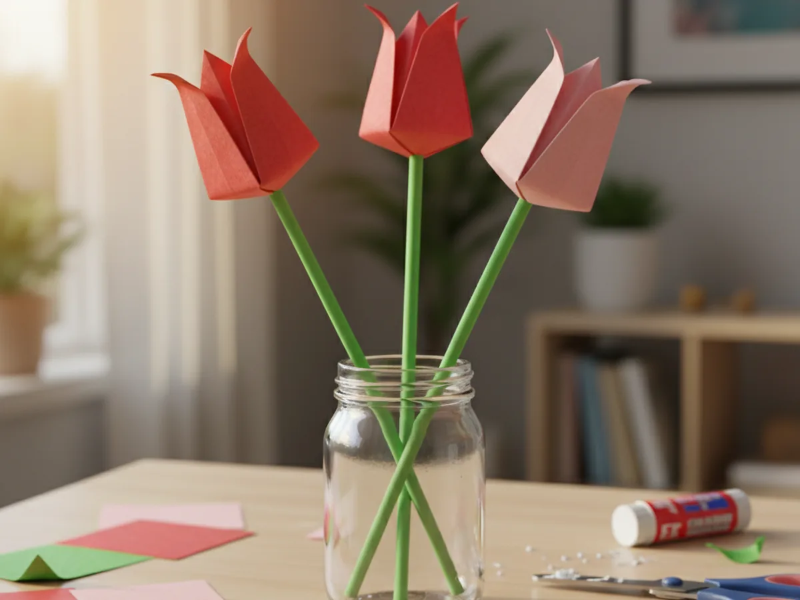
8. Paper Pinwheel
Cut a square of paper into a pinwheel shape by making diagonal cuts toward the center, then fold alternating corners in and secure them with a brad to a wooden skewer or straw. Foldable paper crafts that spin in the breeze are especially exciting for young kids. Let your child decorate the paper with bright marker patterns before you start cutting.
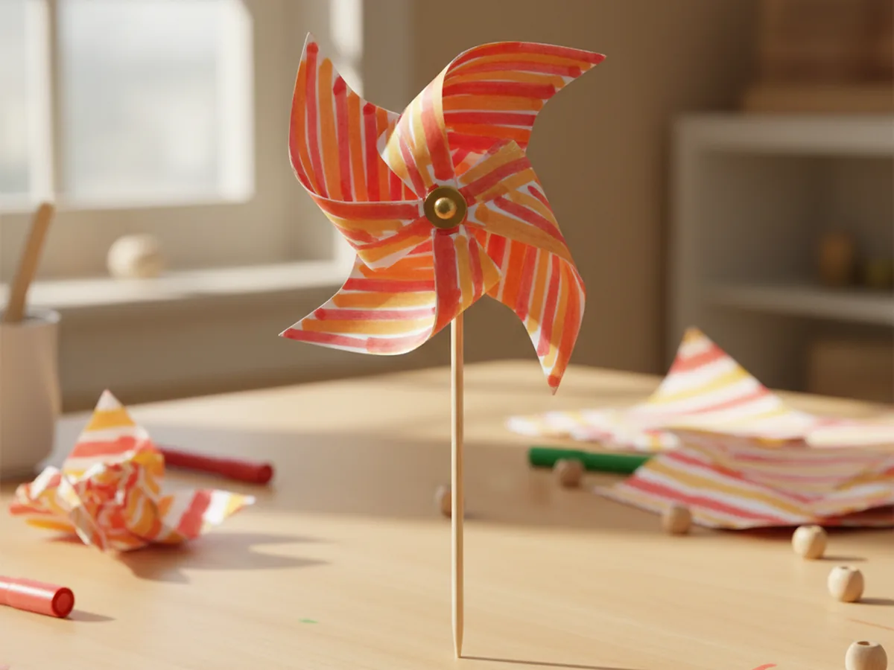
9. Folded Paper Envelope
Take a square sheet, fold in the four corners toward the center, then fold the bottom up and the top down to seal it closed. Your child now has a real little envelope they can tuck a secret note or a drawing inside. This is a lovely project for Valentine's Day, birthdays, or any time your child wants to surprise someone they love.
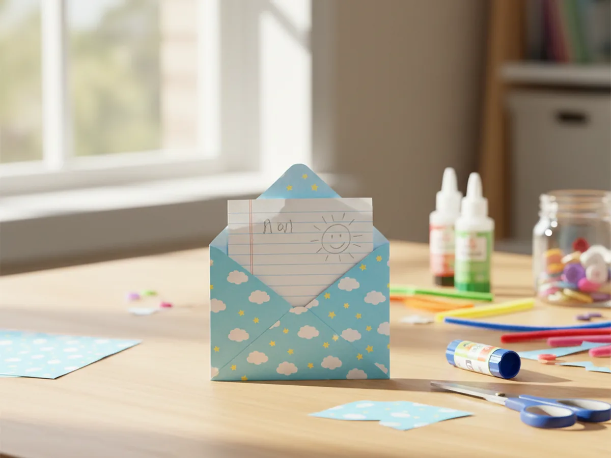
10. Simple Origami Crane
The origami crane is the most iconic of all foldable paper crafts, and a simplified version is absolutely doable for kids aged 7 and up with your help. Use a bright square of origami paper and take it one fold at a time. Once your child has made their first crane, they will want to fill a string with them.
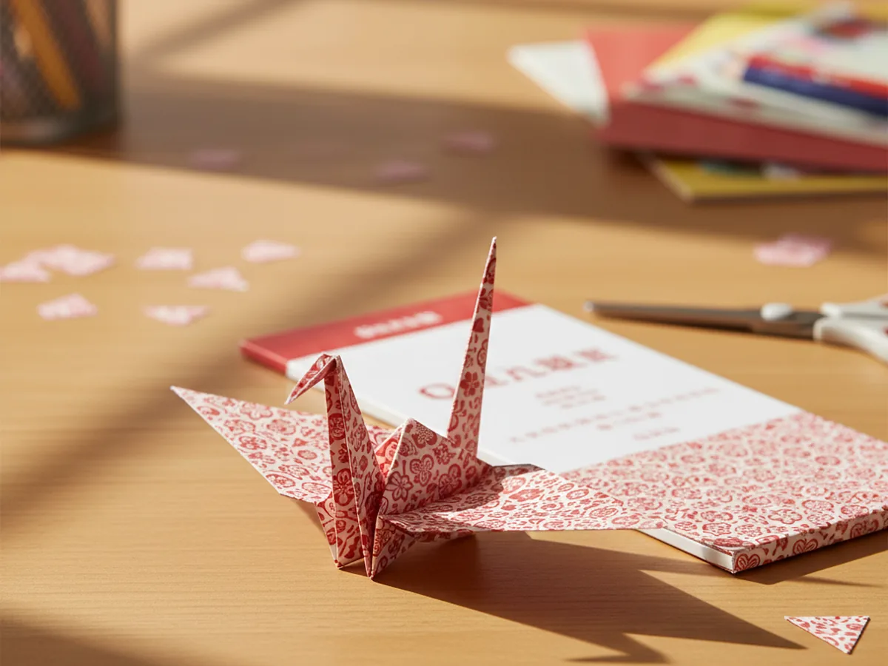
11. Accordion-Fold Bookmark
Cut a strip of cardstock about 2 inches wide and 10 inches long, then accordion-fold it into a compact little stack. Decorate the top section with a drawn face, a flower, or a seasonal design. This is one of those foldable paper crafts that kids feel proud to use every day, and it makes a sweet handmade gift for anyone who loves to read.
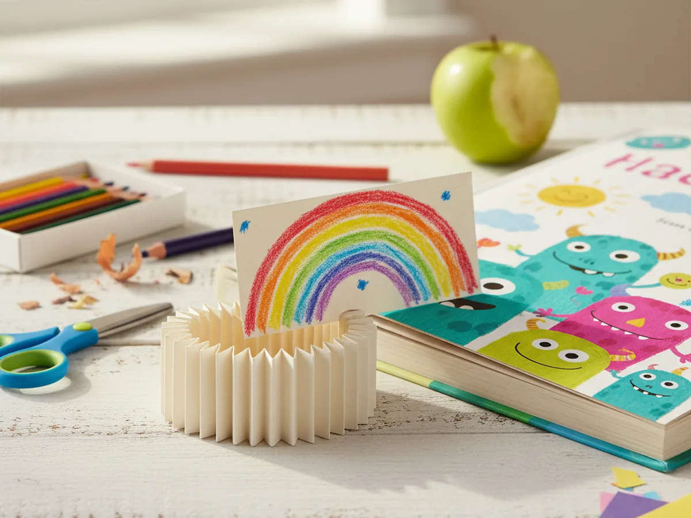
12. Origami Dove
Fold a white square of origami paper into a graceful dove shape with spread wings. The steps are beginner-friendly and result in a beautiful bird that can be hung from a window or ceiling as a mobile. Make several in different sizes for a lovely little flock that looks peaceful and handmade. 🕊️
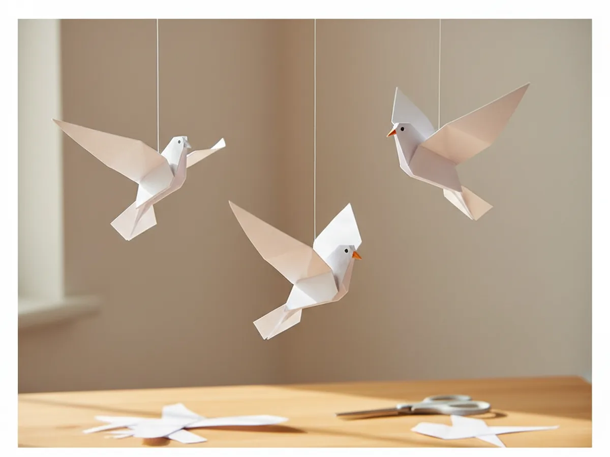
13. Folded Paper Crown
Fold a long strip of cardstock or construction paper back and forth to create a zigzag base, then shape it into a circle and tape the ends together. Each folded peak of the crown can be tipped with a dab of glue and a sequin or small cut-out star. Kids adore wearing their finished crowns, and the whole project takes under 20 minutes.
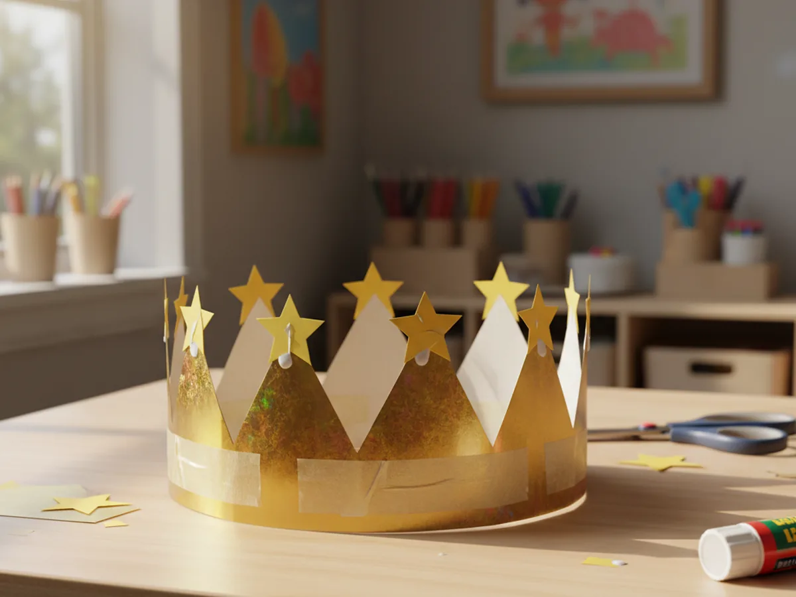
14. Paper Pop-Up Card
Fold a piece of cardstock in half to form a card, then make two small parallel cuts near the center fold and push the resulting tab inward so it pops out when opened. Glue a simple shape, a heart, a flower, or a sun, onto the pop-up tab. This is one of the most rewarding foldable paper crafts because the moment of opening the card is genuinely magical for kids.
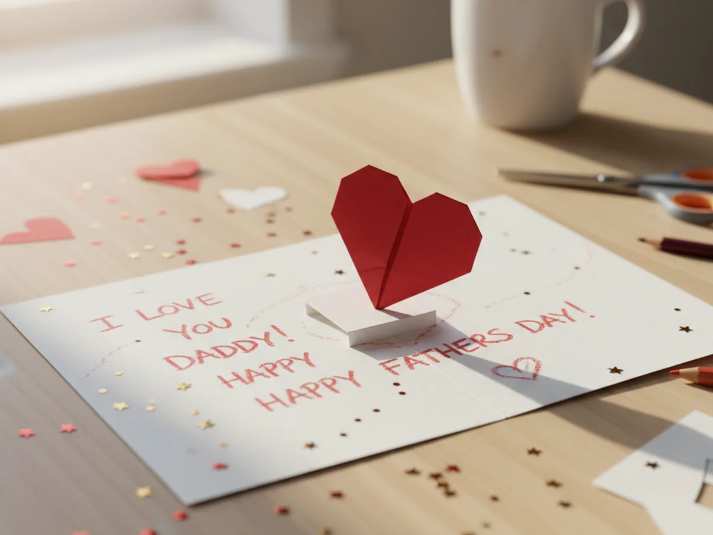
15. Origami Dog Face
Fold a square of brown, beige, or spotted origami paper into the classic dog face shape. Fold the two top corners down for floppy ears and the bottom corner up for a nose, then draw on two eyes and a little mouth. Young children can color their dog with markers after folding to add personality, making each one completely unique.
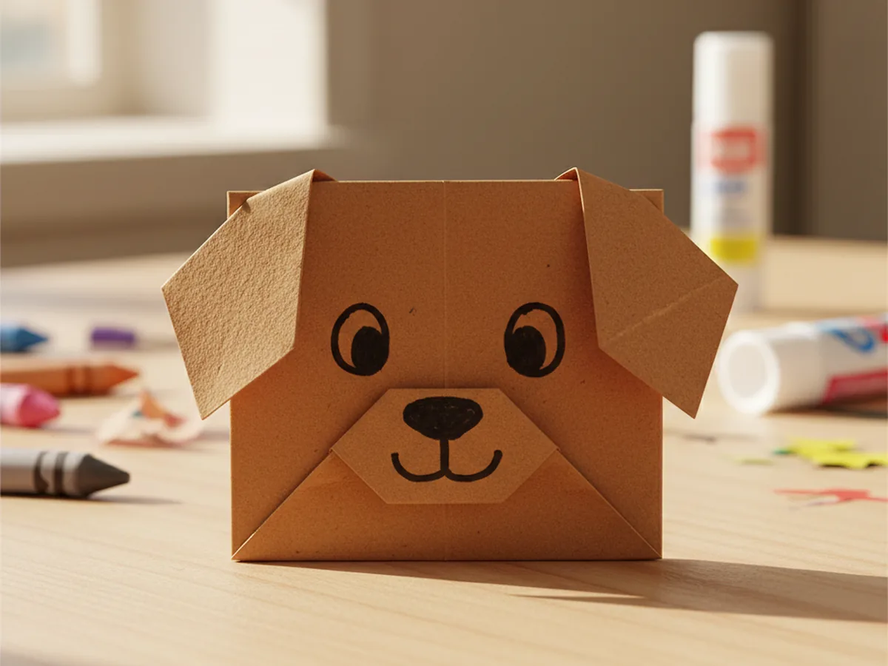
16. Paper Ninja Star
Also called a shuriken, the paper ninja star is made from two small folded paper tubes that interlock together without any glue. It is a genuinely satisfying puzzle-fold that older kids find exciting to figure out. Use two contrasting colors of origami paper for a bold, graphic look that looks much more complex than it actually is.
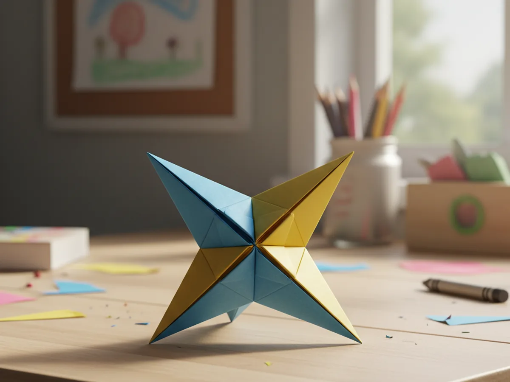
17. Folded Paper Box
The classic masu box is a foldable paper craft that requires no scissors and no glue. Start with a square sheet, fold the corners to the center, then follow the remaining steps to create a sturdy little open box. Make a slightly larger version for a lid and you have a complete little gift box. Kids love using these to store tiny treasures.
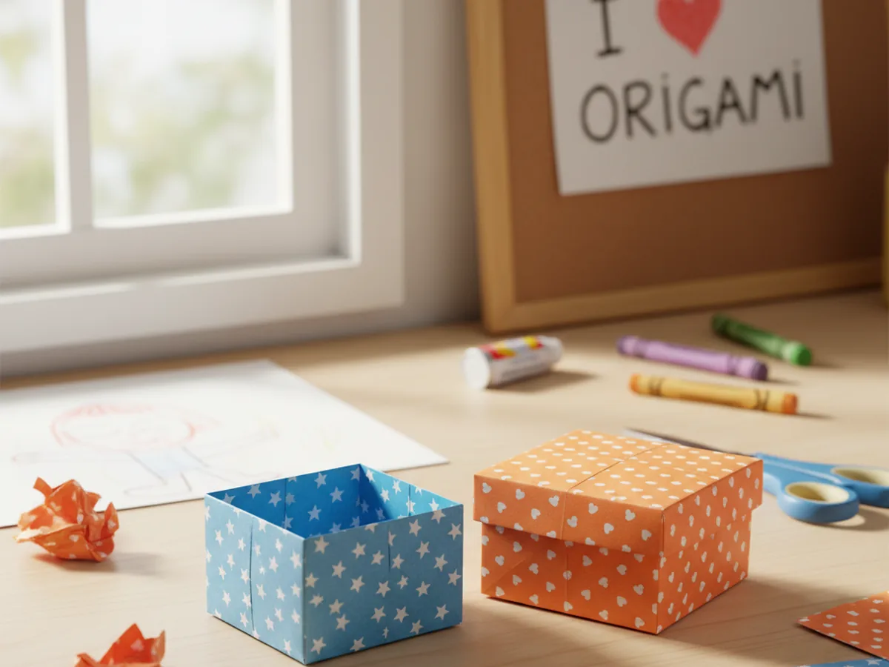
18. Origami Heart
Fold a red or pink square into a small origami heart to tuck into a lunch box, tape to a card, or string along a garland. The heart fold is surprisingly simple and comes together in just a few steps. This is one of those sweet foldable paper crafts that feels like a little love note on its own, no words needed.
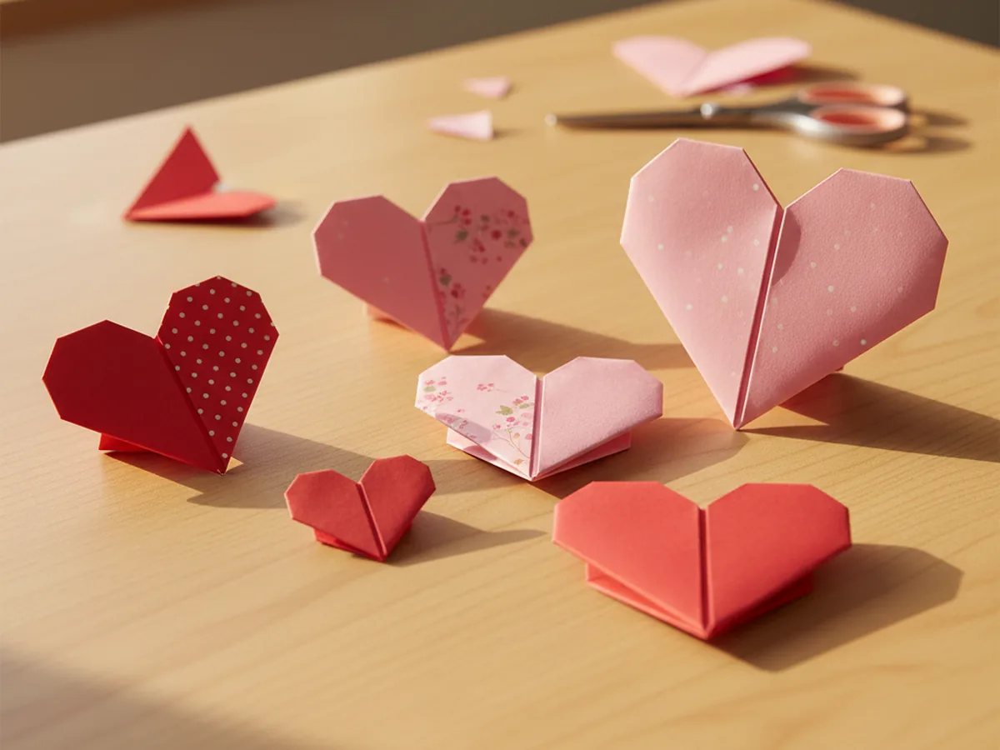
19. Accordion Caterpillar
Cut several strips of paper in two colors, then accordion-fold them and glue the folded segments together end to end to create a wiggly caterpillar body. Add two small googly eyes and paper antennae to the head, and your child has a cheerful little critter they made completely by folding. Younger kids can manage the folding with a little help, and they love choosing the colors.
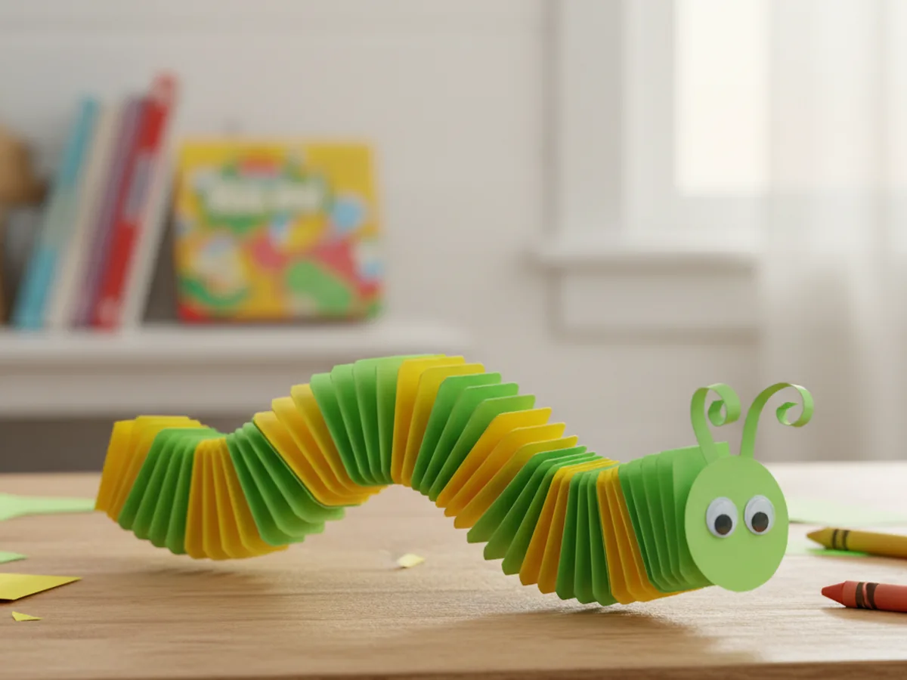
20. Origami Fish
Fold a square of orange or blue origami paper into a simple fish shape with a pointed tail and a round body. Draw on a tiny eye and some scales with marker, then display a small school of them on the fridge or hang them from string above a window. Foldable paper crafts like this one are perfect for ocean-themed days or just whenever your child is in the mood for something quick and satisfying. 🐟
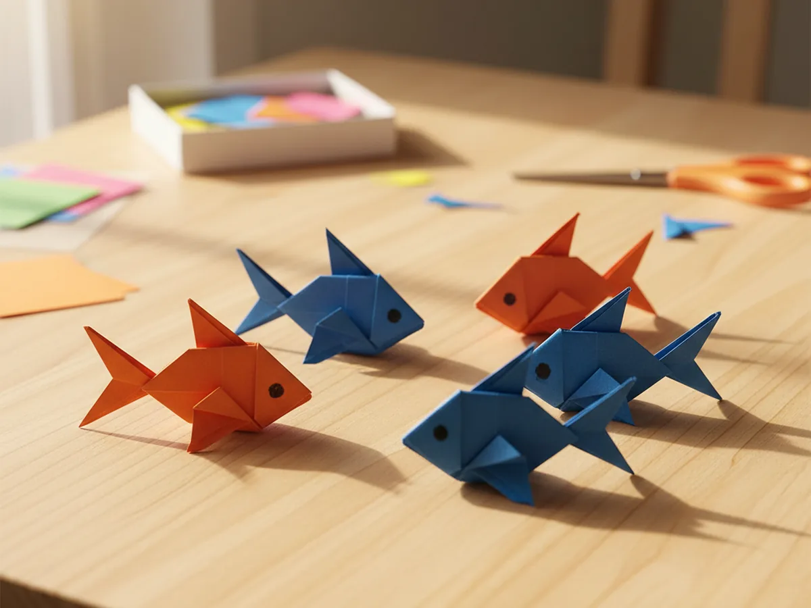
Final Thoughts
There is something so satisfying about watching a flat piece of paper transform into a boat, a frog, or a little heart right before your child's eyes. Foldable paper crafts are one of those rare activities that feel both creative and a little bit magical, and they work beautifully for kids at nearly every age and skill level.
Pick one idea from this list that feels right for where your child is today, grab a sheet of paper, and give it a try together. The best part is that you can always fold another one. 🎉
More Crafts You'll Love
If you enjoyed these folding ideas, you will love exploring even more paper crafts with your child.
Grab a stack of paper and pick your favorite fold. A wonderful crafting moment is just a few creases away.